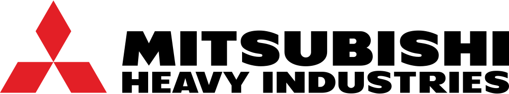
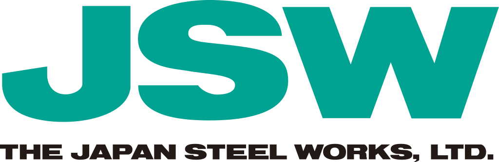
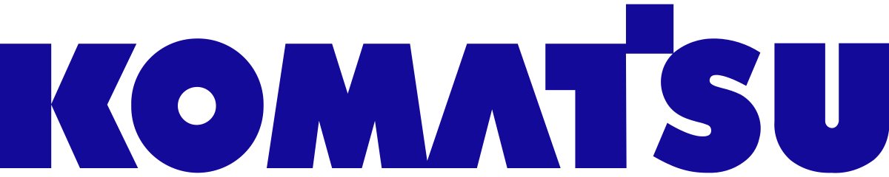
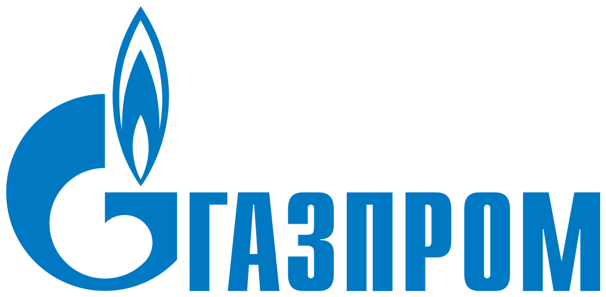
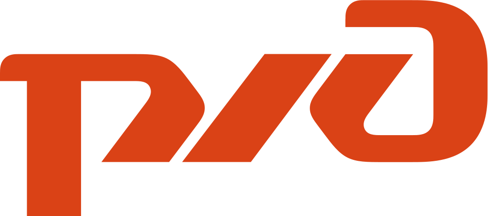

モスクワ国立大学アジア・アフリカ諸国学部卒業。専攻は日本語の通訳・翻訳と日本史。 大学四年時に交換留学生として東海大学で十ヶ月間学びました。大学卒業後、 「建設・道路工事・家庭用機械ソ連邦国中央研究所」で、海外製機械調査部に勤め、 日本語のカタログ、技術雑誌などの翻訳を担当しました。ソ連邦崩壊後、 翻訳・通訳会社に勤務、その後、フリー通訳者・翻訳者として活動中。 通訳・翻訳業務歴は通算35年以上になります。
Eryomin Sergey エリョーミン・セルゲイ
日本語―ロシア語通訳者・翻訳者。
製鉄、電気装置、成形機、火力・原子力発電所、情報転送、金属加工、木工、繊維機械、押出機、タービン、自動車産業、市場調査、 医学、企業監査などの様々な技術産業における経験がございます。三菱重工業、日産、 日本製鋼所 (JSW), コマツ、日本製鉄、日清食品、 TMEIC (東芝・三菱の合弁企業)、 神戸製鋼などの機械メーカ・技術提供者である日本の大手企業と在ロシア日本大使館の皆様、 更に Gazprom, NLMK, Cherepovetskiy Azot, Salavatneftorgshyntez, Mareven food (Rollton), Russia`s railways, Mitsubishi Electricなどのロシアの大手企業に通訳業務をしました。





工場現場、会議、セミナー、プレゼンテーション、展示会などで通訳・翻訳業務のご要望がありましたら、お気軽にお問い合わせいただければ幸いです。
| 携帯電話: | +7 (985) 197-21-40 |
|---|---|
| e-mail: | supatsuyaku@yandex.ru |